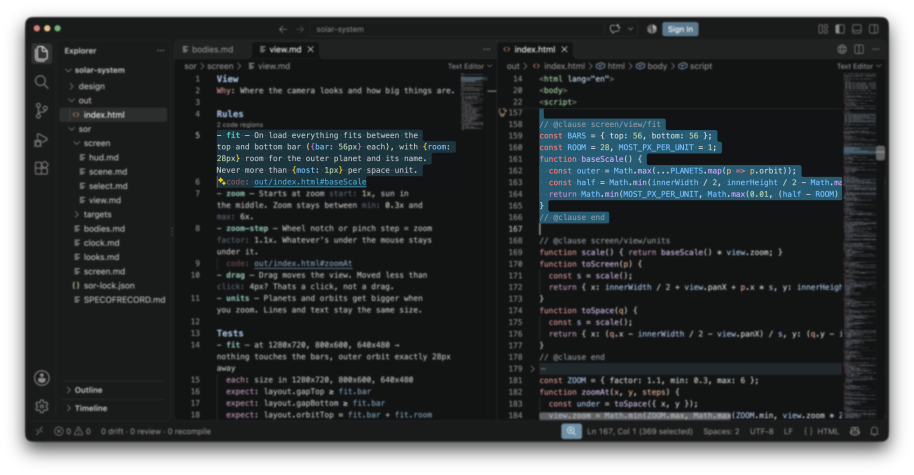

Spec of Record (SoR)
Spec of Record is a development philosophy and toolchain for AI-built software, aimed at mid-sized to large projects. The idea is that you always know why a line of code exists. You write what your software should do in plain language, an AI agent turns it into code, and each piece of code stays linked to the statements behind it and to its test results. Engineering, QA and UX each work in their own field of expertise while sharing a common design document.
/plugin marketplace add sebastianrath/specofrecord/plugin install specofrecord@specofrecordStarting from scratch? In an empty folder, tell Claude Code what you want to build. For example:
I want to build a game engine. Write the first specs following Spec of Record for a game engine that...Already have code? Name the one thing you are about to change. Only that part goes under a spec, and the rest stays as it is. For example:
I am about to change the checkout. Put just that under Spec of Record first, then make my change.Why use SoR?
The reason a code line exists lives in a Jira ticket, a Slack message or a commit message, not in the code itself. AI can write code quickly and loves to rewrite larger parts of the source code because it feels like it, and the reasons never make it into the code. AI agents mostly find context with a keyword search like grep, and a wrong or missed keyword means an incomplete picture. So the next change, by a person or by an AI, starts with a guess.
If you write code, this shows up in a review. You open a change with hundreds of new lines that nobody can meaningfully trace, and you send it back to the AI or wave it through with a quick "looks good to me". If you manage a team of engineers who use agentic coding, you cannot say with confidence what the software does today or whether a change was tested without asking someone.
Spec of Record puts that context back:
- The specs for the whole project sit in one folder, split into parts you can actually read. You decide what the software does and stay its author.
- A change to one clause (one rule in the spec) changes only the necessary code, so a reviewer reads one edit in the spec instead of a pile of new files that come out of nowhere.
- Every line of code names its clause, and every finished build keeps its test results. "Why is this here?" and "Was it tested?" become lookups.
Where it fits in spec-driven development
The term "spec-driven development" is overloaded, so it helps to be clear about which kind you mean. A quick way to tell the different kinds apart is to ask what happens to the spec once the code exists. Birgitta Böckeler of Unblocked describes three answers:1
| Level | What happens to the spec |
|---|---|
| Spec-first | Written to get one task done, then left behind. |
| Spec-anchored | Kept after the task and updated as the feature changes. |
| Spec-as-source | The only thing people edit. The code is rebuilt whenever the spec changes. |
| Spec-of-record | This proposal. |
The problem of spec drift
Spec drift is what happens when the spec says one thing, the code does another, and nobody can tell which is right. It never arrives all at once, because it builds up one small change at a time.
Take a game. Its spec says the player needs 3 keys to open the exit, and the designer asks for 5. The AI changes the code, and nobody updates the spec, because nobody asked or the AI forgot. Now the spec says 3, the game asks for 5, and a new teammate reads the spec and believes it.
Most spec-driven development makes this worse because it is spec-first. Each task gets its own spec, so you end up with SPEC.md, then SPEC-2026-01-08.md, then another one. To learn what the software does today, you read them all in the right order. People stop reading them, and sometimes the AI changes the code with no spec in the loop at all.
Spec-as-source tools, which regenerate code from the spec, fail the other way. An AI does not write the same code twice, so rebuilding a whole file can change parts nobody asked it to touch.
Spec of Record extends spec-as-source, the third level, and offers tooling for engineers, scripts, and agents. It keeps finished code, rebuilds only the clause that changed and flags the moment spec and code disagree.
How it works
Think of the specs as your project's new source folder (src/). They are organized like a codebase but written in plain language. You edit the spec and the AI edits the code to match. If you edit the code, the AI edits the spec to match.
The unit is a clause, which is one rule, one number or one table row. Every clause comes with a marker, a short comment above its code that names the clause. Below is a clause and the code built from it, so you can see each side point at the other.
...
turn – Each key press moves the player, picks up keys and moves the monsters.
...
// @clause run/turn export function takeTurn(game, dx, dy) { move(game.player, dx, dy); keepInRoom(game.player); pickUpKeys(game.player, game.keys); ... } // @clause end
// @clause run/turn export function moveMonsters(game) { ... } // @clause end
With that link in place, a change is guaranteed to stay local. Say you want the player to move only on every second key press. You change that one sentence, and the AI updates just the code blocks marked with that clause.
If you know how a compiler works, the mapping is direct, with the AI playing the compiler.
| Legacy development | Spec of Record |
|---|---|
| You write source code | You write the spec |
| A compiler turns it into a program | The AI turns it into code |
| Only changed files are rebuilt | Only the affected code is rebuilt |
| Tests check the program | Each clause can have its own test |
A real compiler gives the same output every time, so it can throw that output away and start over. An AI cannot, so Spec of Record keeps finished code and gives every clause its own test to catch what the AI gets wrong.
Tools can follow the marker links too. An editor extension jumps from a spec to its code and back, and the sor command gives an AI or a script the same answer as text or JSON. A clause can also reach further back, to a source outside the code such as a Figma design.
In your editor
The VS Code extension shows these links on a sample project. You do not need it to use Spec of Record, but it is a handy way to see them.

- Open a spec and each clause shows the code regions built from it, with links to them.
- Open the code and each region shows its clause and whether the two still agree.
What you get
Beyond the editor extension, Spec of Record comes with a command line tool, sor, and an edit guard for your AI agent. Here is what they do:
- The change list shows what changed since the last build and which code needs rebuilding.
- The edit guard stops the AI from changing code before its clause.
- The test runner runs each clause's tests and tells you how many clauses pass.
- The build record stores every finished build, and a build only counts if its tests pass.
- For AI, scripts and CI, the command line answers directly. For example,
sor markerssays which clause a line came from, or which code a clause produced. Other commands show a clause with its code and map the spec.
The build record
If you manage a team or answer to auditors, this is the section for you. Sooner or later someone asks about a change, and because every finished build goes into the build record, the answers are already on file.
| Question | Answer |
|---|---|
| Why does this line of code exist? | Its marker names the clause it serves. |
| What code does this clause make? | The clause points to all of it. |
| What did this change affect? | The change list shows it. |
| Who changed it, and when? | Version control shows it. Code changed without its clause is flagged, with author and date if you use git. |
| Was it tested? | The build record stores the results, and version control keeps the history. |
| Did a person check anything by hand instead of by a test? | Only if a person signed it off. An AI cannot sign off. |
That helps with reviews, handovers and regulated work, anywhere a change has to be explained after the fact.
Common questions
Is this more documentation to maintain?
No, it replaces the documents you would otherwise write. The spec is what you edit. A change edits a clause, and a new feature adds clauses, or a new part, to the same set of files. There is no second copy to keep in step.
Do I have to convert my existing project?
No. Start with the one thing you are about to change, as in the install steps at the top. The rest of the code stays as it is.
Where do the specs live?
In a sor/ folder next to your code, as plain Markdown files you commit with it. There is no service to run and no account to create.
Which languages and tools work?
Any language, framework or editor, and an AI is optional because people can write the code too. On web projects the tests run for you. On other projects your own test runner reports the results. Today the workflow ships as a Claude Code plugin, and other agents and editors are open for contributions.
What if I change the code myself?
Go ahead. Your change stays. The tool flags it as code changed without its clause (with author and date if you use git), and the AI rewrites the clause to match what you did.
What if the AI builds something wrong?
The clause's tests fail, and the code is fixed until they pass. Clauses with no passing test are listed, so a gap is visible instead of hidden.
Can several people or agents work at once?
Yes. Agents in the same project claim the clauses they are working on, and a second claim on the same clause is refused. People on different machines coordinate through version control, the way they do now.
Related projects
Spec-driven tooling is a crowded field. The projects below cover different parts of the workflow. Some have gone quiet or are paused, and some are tied to one editor, agent or service. Spec of Record borrows ideas from several of them and adds its own.
| Project | What it does |
|---|---|
| Spec KitSpec-first or anchored | Commands and templates that take a feature from spec to plan, tasks and code. From GitHub. |
| OpenSpecSpec-anchored | A proposal for each change. When the change is done, it is merged into the specs. |
| KiroSpec-anchored | An editor with requirements, design and task files for each feature, plus hooks that run on events. |
| BMAD-METHODSpec-first or anchored | A method with agent roles for product, architecture, UX, development and testing. |
| PurlinSpec-anchored | Rules and proofs in specs. Ties tests to rules and marks results out of date when the spec, code or tests change. A Claude Code plugin. |
| CodeSpeakSpec-as-source | Specs that a tool turns into code. In alpha. |
| TesslSpec-as-source | A registry of skills and context for agents. Its spec-as-source Framework is paused. Its spec-driven-development tile is open source. |
| nimaSpec-anchored | A hosted service that turns signals from tools like Slack, Linear and Sentry into specs, and checks pull requests against them. In private beta. |
| DriftSpec-anchored | Binds Markdown docs to code files or symbols. Flags a doc as stale when its code changes. |
| CoherenceSpec-anchored | Checks that code, docs, decision records and tests still point at each other. |
| SpecLockSpec-anchored | Stores rules and warns or blocks when an AI action would break one. |
About
Spec of Record and its tools are written by Sebastian Rath. The source is on GitHub, and contributions are welcome.
License
This document is licensed under Creative Commons Attribution 4.0 (CC BY 4.0). You can share and adapt it, even commercially, as long as you credit the author, link the license and say what you changed.
The tools are published under the MIT License.